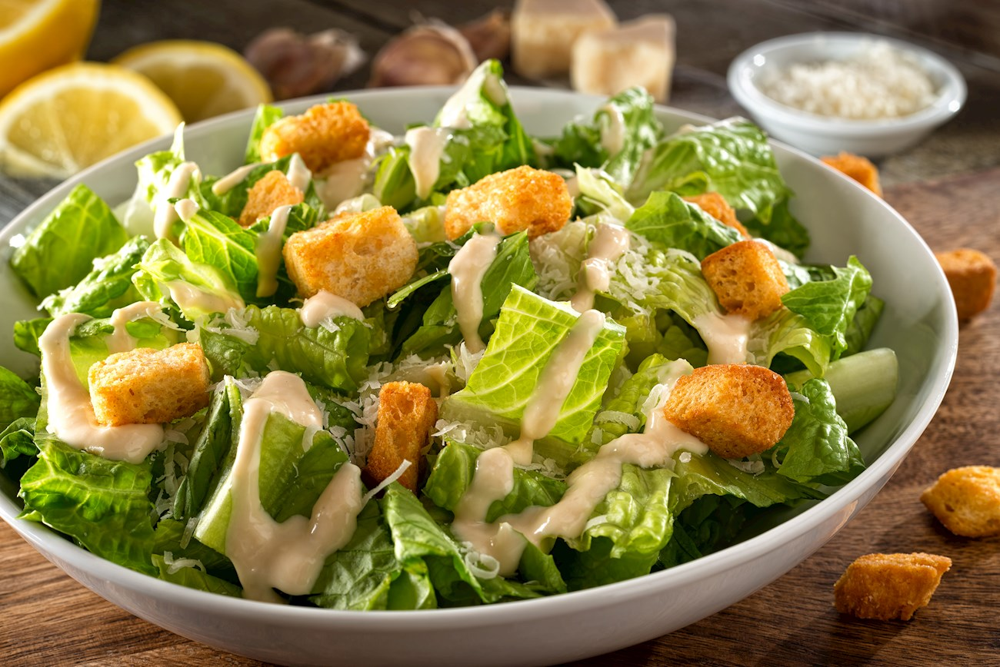

Caesar salad

Description
This crispy tater Caesar salad is for you if you love fries in a salad. Crispy smashed tater tot croutons, a doctored-up bottled Caesar dressing, and crispy chicken cutlets join Romaine lettuce and Parmesan in this meal in a bowl.
Ingredients
- Chicken
- Potato
- Salad
- Garlic
- Anchovies
Steps
- Preheat the oven to 425 degrees F (220 degrees C). Set 2 shelves near the center of the oven. Spray a baking pan with cooking spray; place frozen chicken filets on the pan.
- Bake in the preheated oven on the lower-center shelf until hot and crisp, about 20 minutes, turning filets over halfway through heating time. When cool enough to handle, cut filets into bite-sized pieces.
- Meanwhile, line a large rimmed baking sheet with parchment paper, and add tater tots in an even layer.
- Bake on upper-center shelf in the preheated oven until tots are soft and slightly baked, 8 to 10 minutes. Remove from oven. Spray cooking spray on the bottom of a cup. Smash each tater tot into a flat disk with cup.
- Toss together lettuce, chicken, remaining 1/2 cup Parmesan cheese and remaining 1/4 teaspoon black pepper until well combined. Pour half the dressing into salad mix and toss until evenly coated. Add cooled tater tots and toss until well combined.
- Transfer to a serving platter, drizzle with white balsamic vinegar, and garnish with more Parmesan cheese. Serve immediately.